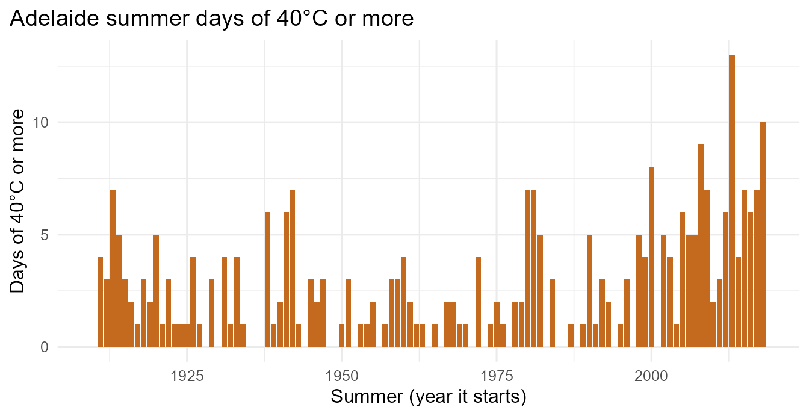

The app answers one question about fire-season heat in seven cities. The functions behind it work on any daily series: your own weather station, a Bureau of Meteorology download, river heights or rainfall. This guide shows the three steps.
| Step | Function | What it does |
|---|---|---|
| 1. Count | count_exceedances() |
Days at or above (or at or below) a threshold, in each year or season, with a missing-data check |
| 2. Compare | compare_periods() |
Average counts in an early and a recent period, using complete seasons only |
| 3. Explain | describe_change() |
One plain-English sentence for a report or a non-specialist |
library(emberdays)
library(dplyr)
#> Warning: package 'dplyr' was built under R version 4.5.3
#>
#> Attaching package: 'dplyr'
#> The following objects are masked from 'package:stats':
#>
#> filter, lag
#> The following objects are masked from 'package:base':
#>
#> intersect, setdiff, setequal, unionYour data, your column names
You need one row per day for a single place, with a Date
column and a numeric column. The names can be anything. Here a slice of
the packaged data stands in for a file you imported, with column names
of your own:
my_station <- fire_season_temps |>
filter(city == "Adelaide") |>
select(day = date, tmax = max_temp)
head(my_station)
#> # A tibble: 6 × 2
#> day tmax
#> <date> <dbl>
#> 1 1910-01-02 37.9
#> 2 1910-01-03 37.4
#> 3 1910-01-04 37.9
#> 4 1910-01-05 39.3
#> 5 1910-01-06 38.2
#> 6 1910-01-07 37.4If your dates are text, convert them first with
as.Date().
1. Count: choose the threshold, the direction and the season
Count summer days (December to February) of 40°C or more. Summer
crosses New Year, so start_month = 12 keeps each summer
together, labelled like "2018-19":
hot40 <- count_exceedances(my_station, "tmax", threshold = 40, date = "day",
start_month = 12, months = c(12, 1, 2))
tail(hot40)
#> # A tibble: 6 × 8
#> season_start season days_possible days_recorded coverage n_exceed extreme
#> <int> <chr> <int> <int> <dbl> <int> <dbl>
#> 1 2013 2013-14 90 90 1 13 45.1
#> 2 2014 2014-15 90 90 1 4 44.1
#> 3 2015 2015-16 91 91 1 7 43.2
#> 4 2016 2016-17 90 90 1 6 42.4
#> 5 2017 2017-18 90 90 1 7 44.1
#> 6 2018 2018-19 90 90 1 10 47.7
#> # ℹ 1 more variable: complete <lgl>-
n_exceedis the count of days meeting the threshold;extremeis the hottest day. -
coverageandcompleteshow how much of each season has a reading. Incomplete seasons are kept and flagged, not dropped silently.
Use direction = "below" for the opposite end, for
example mild summer days with a maximum of 22°C or less:
mild <- count_exceedances(my_station, "tmax", threshold = 22,
direction = "below", date = "day",
start_month = 12, months = c(12, 1, 2))Common season settings:
| Season | start_month |
months |
|---|---|---|
| Calendar year | 1 |
1:12 |
| Southern fire season | 9 |
c(9:12, 1:2) |
| Southern summer | 12 |
c(12, 1, 2) |
| July–June (financial or water year) | 7 |
1:12 |
2. Compare two periods
hot_change <- compare_periods(hot40, early = c(1910, 1939),
recent = c(1988, 2017))
hot_change
#> # A tibble: 2 × 6
#> period first_season last_season seasons_used mean_hot_days enough_data
#> <chr> <int> <int> <int> <dbl> <lgl>
#> 1 Early 1910 1939 30 2.23 TRUE
#> 2 Recent 1988 2017 30 4.1 TRUEenough_data is FALSE when a period has
fewer than 10 complete seasons, so you know when an average is
fragile.
3. Explain it in one sentence
describe_change(hot_change, what = "summer days of 40°C or more",
place = "Adelaide")
#> [1] "In Adelaide, summer days of 40°C or more have become more common: recent seasons (1988–2017) averaged 4.1 per season, compared with 2.2 in 1910–1939, an increase of 1.9 per season (1.8 times the early average)."
mild |>
compare_periods(early = c(1910, 1939), recent = c(1988, 2017)) |>
describe_change(what = "mild summer days (22°C or less)", place = "Adelaide")
#> [1] "In Adelaide, mild summer days (22°C or less) have become less common: recent seasons (1988–2017) averaged 9.0 per season, compared with 11.9 in 1910–1939, a decrease of 2.9 per season (0.8 times the early average)."Paste the sentence into a report, a Quarto document or a Shiny app; the Ember Days app uses exactly this function for its “Answer” line.
Plot the counts
The output is an ordinary tibble, so it plots directly with ggplot2:
library(ggplot2)
#> Warning: package 'ggplot2' was built under R version 4.5.3
hot40 |>
filter(complete) |>
ggplot(aes(season_start, n_exceed)) +
geom_col(fill = "#C46A1F") +
labs(x = "Summer (year it starts)", y = "Days of 40°C or more",
title = "Adelaide summer days of 40°C or more") +
theme_minimal(base_size = 12) +
theme(plot.title.position = "plot")
Things to check first
-
One place at a time.
count_exceedances()stops if it finds repeated dates, which usually means two stations are mixed together. -
Gaps. Look at
coveragebefore trusting a count; themin_coverageargument sets the cut-off (90% by default). - Thresholds are yours to justify. Pick a value that means something to your reader, such as a public health heat threshold or a local rainfall benchmark.